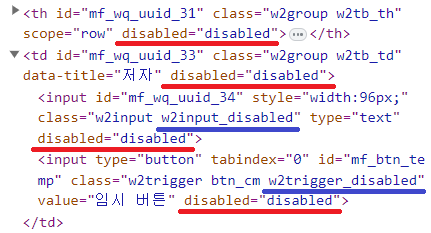
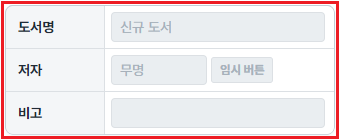
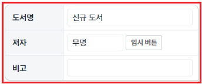
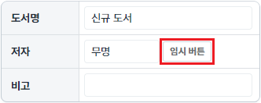
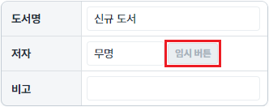

[컴포넌트 공통] 컴포넌트 비활성화하기
1개요
컴포넌트에 공통으로 제공하는 'setDisabled' 메소드를 사용한 예제입니다. 'setDisabled' 메소드는 컴포넌트의 비활성화 여부를 지정하는 기능으로, 첫 번째 인자에 전달된 값이 true이면 브라우저에 표시된 'element'의 속성 'disabled'값을 'disabled'로 설정합니다.
컴포넌트가 비활성화되었을 때 별도의 CSS 적용의 편의를 위해 웹스퀘에 엔진에서는 브라우저에 표시된 'element'에 class를 추가합니다.
컴포넌트별 적용되는 class명이 다르므로 브라우저 개발자 도구를 통해 확인합니다.
예를 들면 InputBox 컴포넌트는 'w2input_disabled'가 추가되고 Trigger 컴포넌트는 'w2trigger_disabled'가 추가됩니다.
[브라우저(Chrome) 개발자 도구 'Elements' 탭 실행 예시]

2구현된 기능
Group 컴포넌트 비활성화하기/활성화하기
Trigger 컴포넌트 비활성화하기/활성화하기
3예제 테스트 방법
3.1Group 컴포넌트 비활성화하기/활성화하기
1
STEP 1: 초기 상태 확인하기
Group 컴포넌트로 Table이 구성되어 있습니다.
Image 1.브라우저(Chrome) 실행 예시

2
STEP 2: Group 컴포넌트를 비활성화합니다.
"Group 비활성화하기" 버튼을 클릭합니다.3
STEP 3: 실행된 결과를 확인합니다.
Group 컴포넌트가 비활성화됩니다.
Image 2.브라우저(Chrome) 실행 예시

4
STEP 4: Group 컴포넌트를 활성화합니다.
"Group 활성화하기" 버튼을 클릭합니다.5
STEP 5: 실행된 결과를 확인합니다.
Group 컴포넌트가 활성화됩니다.
Image 3.브라우저(Chrome) 실행 예시

3.2Trigger 컴포넌트 비활성화하기/활성화하기
1
STEP 1: 초기 상태 확인하기
Group 컴포넌트로 Table이 구성되어 있습니다. 두 번째 행의 '임시 버튼'이 구성되어 있습니다.
Image 4.브라우저(Chrome) 실행 예시

2
STEP 2: '임시 버튼'을 비활성화합니다.
"'임시 버튼' 비활성화하기" 버튼을 클릭합니다.3
STEP 3: 실행된 결과를 확인합니다.
두 번째 행의 '임시 버튼'이 비활성화됩니다.
Image 5.브라우저(Chrome) 실행 예시

4
STEP 4: '임시 버튼'을 활성화합니다.
"'임시 버튼' 활성화하기" 버튼을 클릭합니다.5
STEP 5: 실행된 결과를 확인합니다.
'임시 버튼'이 활성화됩니다.
Image 6.브라우저(Chrome) 실행 예시
4구현 예시
4.1컴포넌트 비활성화하기
컴포넌트의 'setDisabled' 메소드를 사용하여 스크립트를 작성합니다. 첫 번째 인자를 true로 할당합니다.
Example 1.Script
// Group 'grp_exam1'을 비활성화합니다. grp_exam1.setDisabled(true);
4.2컴포넌트 활성화하기
컴포넌트의 'setDisabled' 메소드를 사용하여 스크립트를 작성합니다. 첫 번째 인자를 false로 할당합니다.
Example 2.Script
// Group 'grp_exam1'을 활성화합니다. grp_exam1.setDisabled(false);
5주요 API
setDisabled